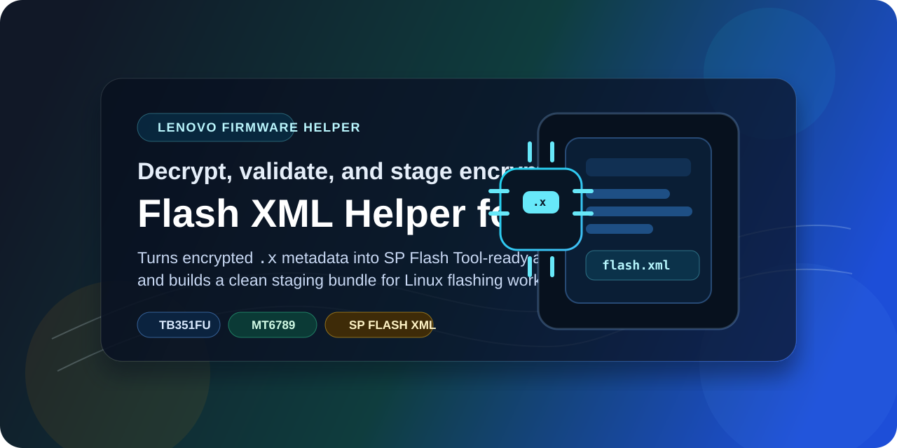

Lenovo Tab Plus TB351FU
Tools, links and ongoing development for the TB351FU.
This page brings together the current unlock tools, firmware helpers, downloads and development status for the Lenovo Tab Plus TB351FU. If you are working on this device, the main starting points are below.
Current Projects
Two repos are ready to use right now
The repos below cover the current public tooling for the TB351FU. One focuses on the unlock path, and the other helps prepare Lenovo firmware files for cleaner flashing work.
Bootloader Unlock
This repo is aimed at advanced users and developers working on bootloader access for the Lenovo Tab Plus TB351FU. It focuses on the Linux-side flow, token generation and final unlock verification.
- Device-specific unlock token generation.
- Guidance around the required auth and flash assets.
- Fastboot checks after the unlock step is complete.

Lenovo Flash XML Helper
This helper is for unpacking Lenovo firmware metadata and preparing a cleaner SP Flash Tool bundle for TB351FU work. It is useful when the stock package needs extra prep before flashing.
- Decrypts Lenovo
.xfirmware metadata. - Checks the XML structure and referenced image files.
- Builds a flash-ready
sp_flash_tool_bundle/.
Development Status
Recovery and ROM work are still in progress
These sections are here so visitors can quickly see what is being worked on now. If you want to help with bring-up, testing, logs or development, contributions are welcome. Please do not spam for ETA.
Custom Recovery
Recovery development for the TB351FU is underway. Help with testing, logs, tree work and debugging is always useful while bring-up continues.
Development is ongoing. If you want to contribute, please help with development and testing, and do not spam for ETA.
Telegram Discussion [link here]
Recovery Group [link here]
Custom OS
Custom OS bring-up is still in its development phase for the TB351FU. Device trees, kernel work, testing and debugging help are all welcome while the project moves forward.
Development is ongoing. If you want to contribute, please help with development and testing, and do not spam for ETA.
Telegram Discussion [link here]
OS Group [link here]
Links
Downloads, pages and public profiles
The links below collect the main public pages for this project, along with the file host and the placeholders that will be updated later as more channels go live.
Project links
Current GitHub Pages
helllopratik.github.io/portfolio/
GitHub Profile
github.com/helllopratik
Android File Host
androidfilehost.com profile
XDA Page
[link here]
Telegram Channel
[link here]
YouTube Page
[link here]
What visitors will find here
- Current public tools for the Lenovo Tab Plus TB351FU.
- Ongoing status for recovery and custom OS work.
- Download and profile links in one place.
- Clear placeholders for pages that will be added later.
About
Pratik Gondane
Pratik is a computer science engineer with a diploma in Computer Engineering, a B.E. in Computer Science and Engineering, and an M.Tech. in Computer Science and Engineering. Most of his work revolves around Android internals, Linux systems and low-level device understanding.
Outside the usual coding workflow, he spends time on ROM customization, system experimentation, performance tuning and practical tooling around real hardware. This site exists to keep TB351FU development in one public place.